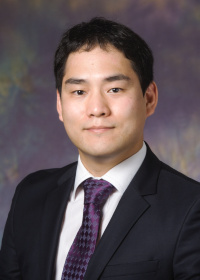

Artificial Intelligence Hardware & Algorithms (AIHA) Lab. (Website)
Department of Electronic Engineering, Hanyang University (222 Wangsimni-ro, Seongdong-gu, Seoul, South Korea)
choij@hanyang.ac.kr
News
I am recruiting highly motivated graduate students (MS/PhD programs) with strong research interests in the following topics:
- Compute-efficient deep learning training and inference algorithms (Quantization and Pruning)
- High performance and low power neural processor architecture design and implementation
- Deep learning performance analysis and dataflow/data-reuse optimization software
- Robust deep learning algorithms for in-memory computing (ReRAM and PCRAM)
** Full tuition (+ stipend) support is available for students who apply for the MS-PhD integrated program. **
Please contact me with your CV/Resume if interested!
Employment and Education
Research Interests
- Artificial intelligence algorithms, accelerator hardware architecture, and performance optimization software
- AIHA Lab 소개자료
Research Projects
- 2020 - 2027: 과학기술정보통신부 차세대지능형반도체 기술개발사업 - 2,000 TFLOPS급 서버 인공지능 딥러닝 프로세서 및 모듈 개발
- 2020 - 2024: 과학기술정보통신부 차세대지능형반도체 기술개발사업 - 데이터 재사용 고도화 초저전력 엣지용 딥러닝 프로세서 기술개발
- 2020 - 2024: 과학기술정보통신부 인공지능대학원 지원사업
- 2020 - 2023: 과학기술정보통신부 시스템반도체융합전문인력육성사업 - 산학 밀착형 IoT 반도체 시스템 융합 인력양성 센터
Publications
Jungwook's Google Scholar page